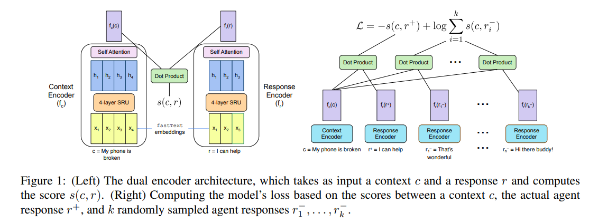

Building a Production Model for Retrieval-Based Chatbots¶
Introduction¶
Chatbot dialogue system:
- Generative approach (not focused in this paper)
- Retrival approach: better control over response quality than generative approaches. Selct outputs from a whitelist of candidate responses.
Challenge:
- Inference speed
- Whitelist selction process and the associated retrieval evaluation. Recall: over-simplified.
3. Model Architecture¶
2 inputs:
- context c: concatenate of all utterances in the conversation. We use special tokens to indicate whether each utterance comes from the customer or the agent.
- candidate response r.
1 output
A score s(c, r) indicating the relenvance of the response to the context
3.1 Dual encoder¶
Core of the model, 2 neural encoders \(f_c\) and \(f_r\) to encode the context and the response, respectively. They have identical architecture but sperate weights.
Input of encoders: \(w = {w_1, w_2, ... w_n}\), either text or response.
Use fastText as word embedding method due to the prevalence of typos in both user and agent utterance in real chats.
Each encoder consists of 1 recurrent neural network and 1 multi-headed attention layer.
Recurrent neural network: multi-layer, bidirectional SRUs, each layer of SRU involves the following computation
where \(\sigma\) is the sigmoid activation function. \(W, W_f, W_r \in R^{d_h * d_e}\) are learned matrices and \(v_f, v_r, b_f, b_v \in R^{d_h}\) are learned parameters
The multi-headed attention layer compresses the encoded sequence \(h = {h_1, h_2, ... h_n}\) into a single vector. For each attention head i, attention weights are generating with the following computation
where \(\sigma\) is a non-linear activation function, \(W_a^{(i)} \in R^{d_h * d_a}\) is a learned parameter matrix and \(v_a^{(i)} \in R^{d_a}\) is a learned parameter vector.
The encoded sequence representation is the pooled to a single vector for each attention head i by summing the attended representation
Finally, the pooled encodings are averaged accross the \(n_h\) attention head
The output of the encoder function is the vector \(f(w) = \hat{h}\)
3.2 Scoring¶
To determine the relevance of a response r to a context c, the model computes a matching scoring between the context encoding \(f_c(c)\) and the response encoding \(f_r(r)\). This score is simply the dot product of the encodings:
- ..math::
- s(c, r) = f_c(c) cdot f_r(r)
3.3 Training¶
We optimize the model the maximize the score between the context c and responce \(r^+\) actually sent by the agent while minimize the score between the context and each of k random “negative” response \(r_1^-, ..., r_k^-\). Although negative response could be sampled seperately for each context-response pair, we instead share a set of negative response accross all examples in a batch. This has the benefit of reducing the number of responsees that need to be encoded in each batch of size of b from O(kb) to O(k + b)
3.5 Whitelist Generation¶
2 method of create a whitelist from which our model selects responses at inference time:
- Frequency-based method: select 1,000 or 10,000 most common agent responses.
- Clustering-base method: encode all agent responses using response encoder \(f_r\) and use k-means clustering with k = 1000 or k = 10,000 to cluster the reponse. Then selected the most common response from each cluster to create whitelist